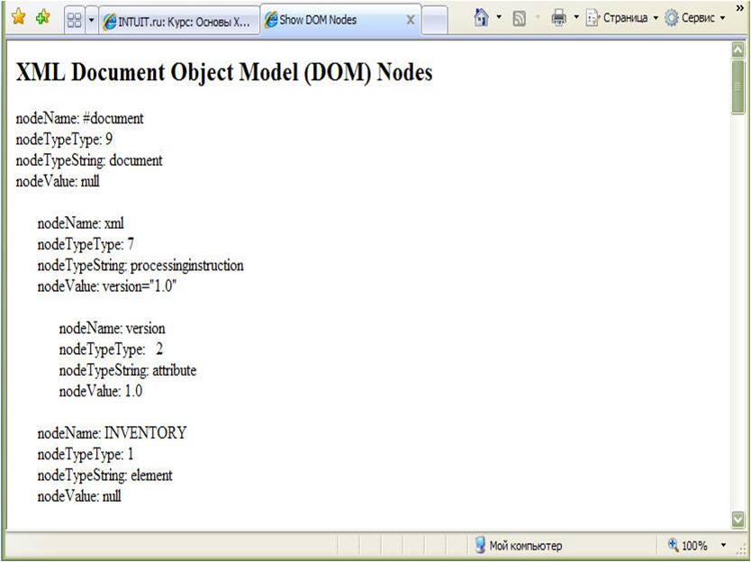
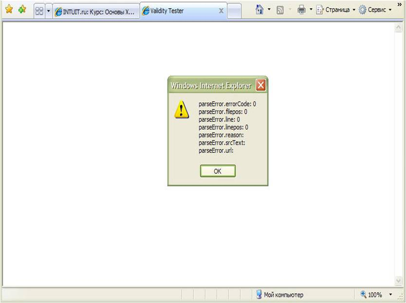
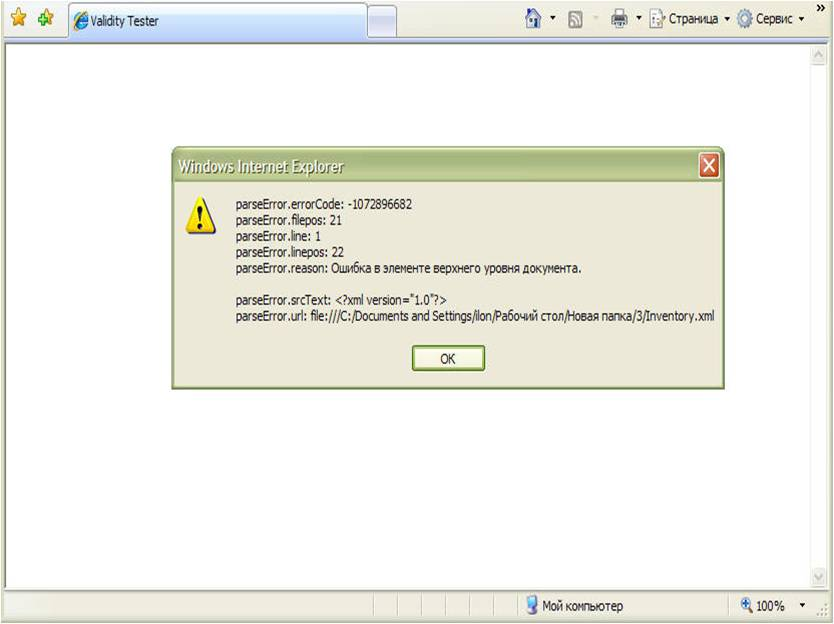

Задания к лекции №9
Задания
Откройте страницу из листинга 9.9.
в Internet Explorer 5.
Обратите внимание, что свойство
nodeTypeString содержит тип узла в виде строчных букв. (Так, «Document» и
«ProcessingInstruction» превращаются в «document» и
«processinginstruction».)
Изначально страница отображает
XML-документ Inventory Dom.xml.(рис. 9.6.)

Рис. 9.6.
Чтобы просмотреть структуру узлов
для других XML-документов, отредактируйте фрагмент данных страницы. Например,
чтобы просмотреть узлы документа Inventory Valid Entity.xml, вы должны изменить
фрагмент данных следующим образом:
<XML ID="dsoXML" SRC="Inventory Valid
Entity.xml"></XML>
Как использовать страницу проверки на
валидность
В вашем текстовом редакторе
откройте страницу проверки на валидность Validity Test.htm. Отредактируйте
фрагмент данных в разделе BODY страницы, чтобы атрибуту SRC было присвоено URL
XML-документа, который вы хотите подвергнуть тестированию. Например, чтобы
протестировать документ Raven.xml, вы должны отредактировать фрагмент данных
следующим образом:
<XML ID="dsoTest"
SRC="Raven.xml"></XML>
Воспользуйтесь командой Save
(Сохранить) вашего текстового редактора, чтобы сохранить модифицированную
страницу.
Откройте страницу в Internet
Explorer 5.
Страница отобразит окно сообщения,
содержащее информацию о первой ошибке, обнаруженной XML-процессором Internet
Explorer 5. На рисунке 9.7 показано как будет выглядеть окно
сообщения, если документ не содержит ошибок.

Рис. 9.7.
А на рисунке
9.8 показано как оно будет выглядеть при наличии
ошибки.

Рис.
9.8.